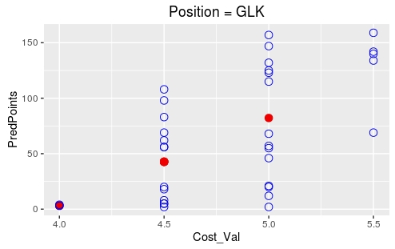
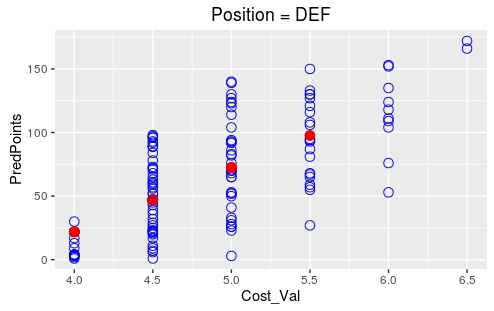
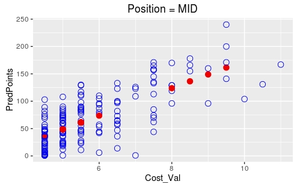
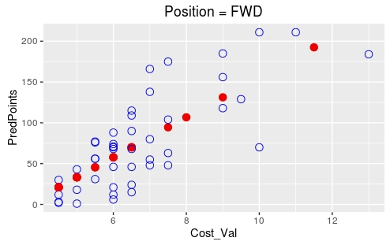
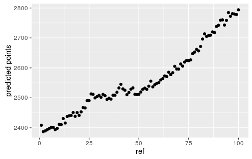
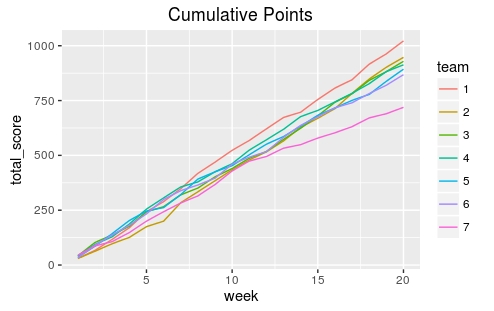
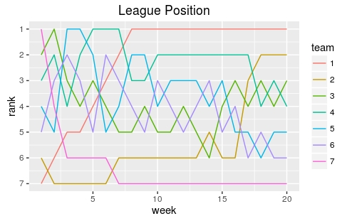
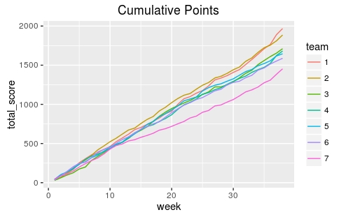
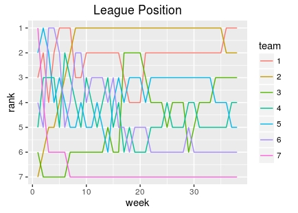

## Read in the current player list
## This reads in the player list from premierleague.com.
library(rvest)
library(xml2)
url <- 'https://fantasy.premierleague.com/player-list/'
pos <- c('GLK', 'DEF', 'MID', 'FWD')
tabs <- url %>% read_html() %>% html_nodes('.ism-table') %>% html_table()
for (i in seq_along(tabs)) {
tabs[[i]]$Pos <- pos[(i+1) %/% 2]
}
df <- dplyr::bind_rows(tabs)For the 2016/17 Premiership season some friends set up a fantasy football league for kids to play against their dads. My son wanted his own team but doesn’t know much about Premiership players and their abilities so we decided to look into writing some code to pick a team for him. Our target was to pick a team, within certain constraints, with the potential for scoring the maximum points - sounds a lot like a linear optimization. A quick search led me to a blog entry where this has already been applied and we took this as the basis of our code (all written in R).
First we want a list of the players with some information such as the team they play for and their cost. We’d also like some assessment of how much they are likely to score as this is what we’ll be aiming to maximize. In this case we’ll be using last season’s score. The player list can be easily scraped from the fantasy premierleague site.
Scraping from the site provides an up to date player list including any additions / subtractions from the beginning of the season as well as the current score. We pulled back the list before the season started which included last season’s score and stored it in a Gist.
df <- read.csv('https://gist.githubusercontent.com/harveyl888/269ee507a9dc2939c84bfd1f550a6931/raw/3f4c8986623af7a06831fc51322261e95a350024/playerlist_2016_start.csv', stringsAsFactors = FALSE, check.names = FALSE)At this point we have a data frame that contains player name, team, points scored last season, cost and position. Points scored last season can be used as an approximate indicator of performance this year but what about players who are new to the Premiership? A very crude estimation can be made by assuming that cost is somewhat proportional to points accrued. Of course, every season there are players who under- or over-perform based on their cost and we’re not taking into account random events such as season-ending injuries, but we’ll assume that the gurus at the Premiership have got the price assessment somewhat right and will use this to estimate the new players.
## Load a few libraries
library(dplyr)
library(lpSolve)
library(formattable)
library(ggplot2)
## Pull out the numeric cost
df$Cost_Val <- as.numeric(substring(df$Cost, 2))
## Define positions
pos <- c('GLK', 'DEF', 'MID', 'FWD')
l.cost <- lapply(pos, function(x)
df %>%
filter(Pos == x & Points > 0) %>%
select(c(Cost_Val, Points))
)
l.sum <- lapply(l.cost, function(x)
summary(lm(x$Points ~ x$Cost_Val))
)
## Estimate points for new players based on associated cost
df$newPoints <- apply(df,
1,
function(x) ifelse(as.numeric(x['Points']) > 0,
as.numeric(x['Points']),
as.numeric(l.sum[[match(x['Pos'], pos)]]$coefficients[[2]]) * as.numeric(x['Cost_Val']) + as.numeric(l.sum[[match(x['Pos'], pos)]]$coefficients[[1]])
))
## Generate plots
l.plot <- lapply(pos, function(x) {
df %>% filter(Pos == x) %>%
mutate(PredPoints = ifelse(Points == 0, newPoints, Points)) %>%
mutate(Pred = ifelse(Points == 0, 2, 4)) %>%
select(Cost_Val, PredPoints, Pred)
})
lapply(seq_along(l.plot), function(x)
ggplot(l.plot[[x]], aes(x=Cost_Val, y=PredPoints, col=Pred)) +
geom_point(aes(size = Pred)) +
theme(legend.position = "none") +
labs(title = paste0('Position = ', pos[x]))
)In the plots below the red dots represent predicted points for new players based on cost alone.




Now we have cost and points assigned to each player we can build out linear solver. First we define some constraints. In the fantasy Premierleague game, a squad comprises of 15 players (2 goalkeepers, 5 defenders, 5 midfielders and 3 forwards). The total cost of the squad cannot exceed £100M. These constraints are defined below.
### Constraints
num_gk = 2
num_def = 5
num_mid = 5
num_fwd = 3
max_cost = 100In addition, the maximum number of players from any one team is capped at 3. I prefer to stack the odds and bias the squad to teams that, history has shown, are likely to score higher in fantasy football. Finally, several players have been injured prior to the start of the season. These are players that I wouldn’t want to select and so an injury flag of 0 or 1 is added.
## Add player positions as flag 0 or 1
for (p in pos) {
df[[p]] <- ifelse(df$Pos == p, 1, 0)
}
## flag injured players
df[['inj']] <- 0
df[df$Player %in% c('Bellerín', 'Mertesacker', 'Welbeck', 'Mings', 'Stanislas', 'Mikel',
'Zouma', 'Campbell', 'Sako', 'Besic', 'Browning', 'Pennington', 'Bruce',
'Dawson', 'Maguire', 'McGregor', 'Odubajo', 'Karius', 'Gündogan', 'Ayala',
'Bernardo', 'Husband', 'Leadbitter', 'Bertrand', 'Afellay', 'Ireland',
'Cattermole', 'Kirchhoff', 'Larsson', 'Baston', 'Dja Djédjé', 'Cresswell',
'Lanzini', 'Sakho'), 'inj'] <- 1
teams <- unique(df$Team)
team_max <- c(3,3,3,3,3,2,2,2,2,2,2,1,2,1,0,1,0,0,0,1)
df.teams <- data.frame(team = unique(df$Team), 'max pick' = team_max)Now we’re ready to build our optimizer.
## Now let's build our constraint matrix
## The first 4 columns define the player position as either goalkeeper, defender, midfielder
## or forward. Players either play in that position (1) or not (0)
## Column 5 contains the player cost
## Columns 6-25 cover the team (1 if they player plays for the team and 0 if he does not)
## The last column contains injury information (0 if healthy and 1 if injured)
team_constraint = unlist(lapply(unique(df$Team), function(x, df) {
ifelse(df$Team==x, 1, 0)
}, df=df))
const_mat = matrix(c(df$GLK, df$DEF, df$MID, df$FWD,
df$Cost_Val, team_constraint, df$inj),
nrow=(6 + length(unique(df$Team))),
byrow=TRUE)
## Next we need to define the righthand side of the constraints.
## Each of these terms have been defined above.
const_rhs = c(num_gk, num_def, num_mid, num_fwd, max_cost, team_max, 0)
## Finally we define the constraint direction. This defines how the left and righthand sides
## are related.
## In this case we hold the number of goalkeepers, defenders, midfielders and forwards constant.
## The total cost should be less than or equal to max_cost and the number of players per team is
## less than or equal to each team's maximum.
## The number of injured players has been set to zero.
const_dir <- c("=", "=", "=", "=", rep("<=", 21), '=')We have our optimizer ready. Repeated runs will lead to the same outcome but it’s useful to generate more than one team for comparison therefore we’ll repeat the calculation with a slight jitter to the predicted score.
num_repeats <- 100 ## generate 100 teams
df.rep <- df
l.out <- list()
for (i in seq(num_repeats)) {
## Add a little jitter to the predicted points
df.rep$newPoints <- jitter(df.rep$newPoints, factor = 250)
# Define the vector to optimize against
objective = df.rep$newPoints
## Perform the optimization
x = lp("max", objective, const_mat, const_dir, const_rhs, all.bin=TRUE, all.int=TRUE)
## Get the best solution
l.out[[i]] <- arrange(df.rep[which(x$solution==1),], desc(GLK), desc(DEF), desc(MID), desc(FWD), desc(newPoints))
}
## plot the scores
plot(sapply(l.out, function(x) sum(x$newPoints)))This generates 100 teams. The predicted scores will generally increase over time due to the fact that we’re starting from an optimized team each time.

I put this together for my son and he went through the teams, selecting one that appealed to him. We’re around 1/2 way through the season now - how is he doing?
library(jsonlite)
#leagueID <- ?????
## Get league information
url <- paste0('https://fantasy.premierleague.com/drf/leagues-classic-standings/', leagueID, '?phase=1')
leagueTableData <- fromJSON(url)
l.man <- leagueTableData$standings$results$entry
## Get team history information
l.teams <- lapply(l.man, function(x) {
Sys.sleep(0.2)
url <- paste0('https://fantasy.premierleague.com/drf/entry/', x, '/history')
fromJSON(url)
})
## Put together a table of scores
l.teamleague <- lapply(seq(l.teams), function(x) {
data.frame(team = x, week = l.teams[[x]]$history$event, score = l.teams[[x]]$history$points, total_score = l.teams[[x]]$history$total_points)
})
df.teamleague <- bind_rows(l.teamleague)
df.teamleague$team <- factor(df.teamleague$team, levels = unique(df.teamleague$team))
df.teamleague <- df.teamleague %>%
arrange(week, total_score) %>%
group_by(week) %>%
mutate(rank = 8 - row_number()) %>%
arrange(week, rank)
ggplot(df.teamleague, aes(x=week, y=score, group=team)) + geom_line(aes(col=team))
ggplot(df.teamleague, aes(x=week, y=total_score, group=team)) + geom_line(aes(col=team))
ggplot(df.teamleague, aes(x=week, y=rank, group=team)) +
geom_line(aes(col=team)) +
scale_y_reverse(breaks=seq(1,7))He’s doing pretty good! His team is team #1 in the graphs below. At week 8 he took the lead and has manage to hold it. We’re at week 20 so we’ll see how the rest of the season goes. As the season goes on he’s learning more about players but is still at a disadvantage compared to other managers in terms of Premiership knowledge. Next season we’ll work changing the team thoughout the season.


Update (May 22, 2017)
Oh so close! Jake led up to the penultimate week and was then caught.

